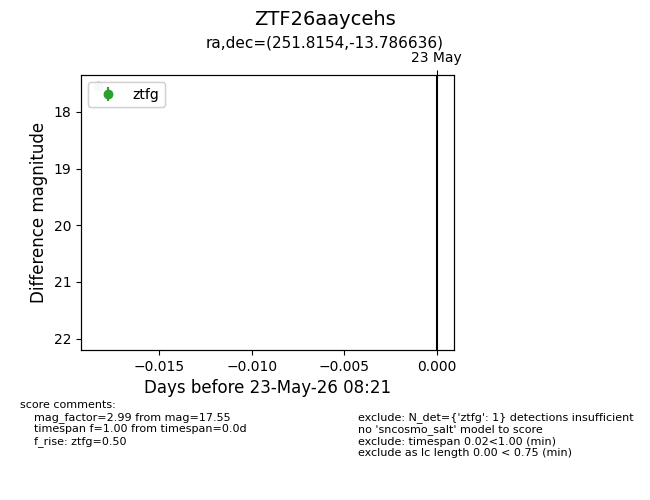
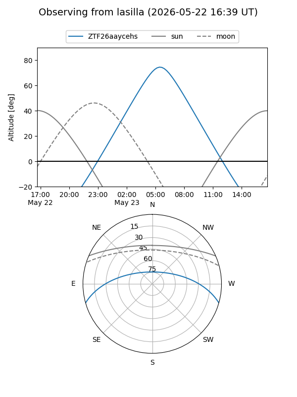
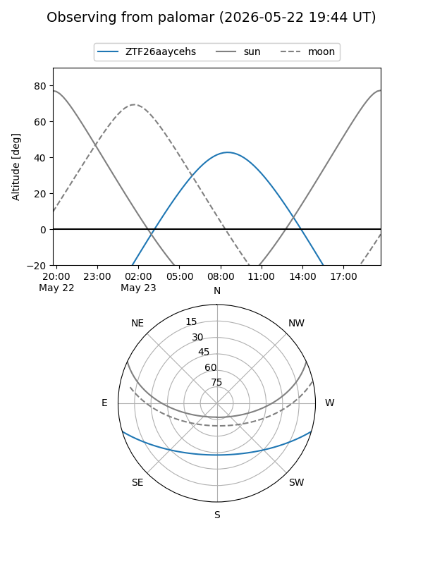

ZTF26aaycehs
Target ZTF26aaycehs at 2026-05-23 08:22
Aliases and brokers:
lsst-FINK: link
lsst-Lasair: link
lsst-ALeRCE: link
ztf-FINK: link
ztf-Lasair: link
ztf-ALeRCE: link
alt names
ZTF26aaycehs (ztf,fink_ztf)
Coordinates:
equatorial (ra, dec) = 251.8154,-13.78664
equatorial (HMS+DMS) = 16:47:15.69,-13:47:11.89
galactic (l, b) = (5.0374,+19.69895)
Flags:
Photometry:
last ztfg=17.55
1 ztfg detections
Lightcurve

Visibility


Additional plots